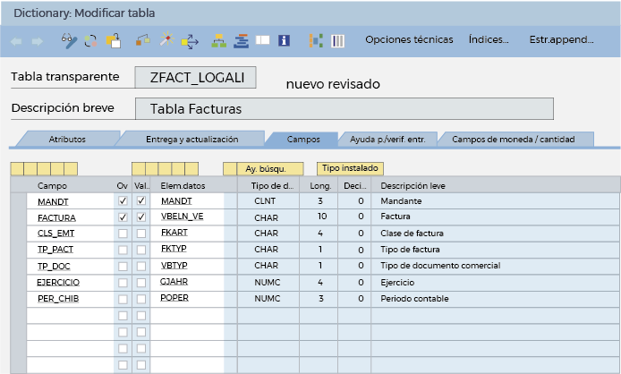
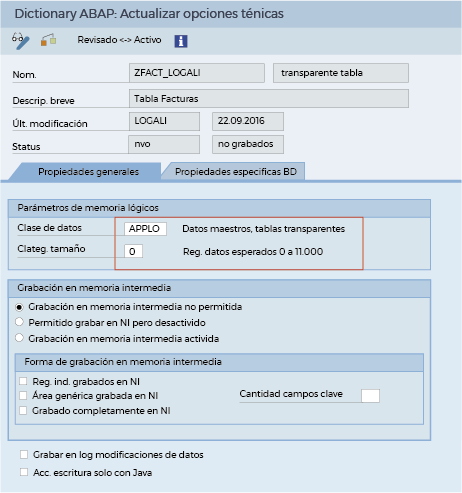

Siga estas indicaciones para cumplir con el propósito de la actividad:
El diccionario de datos permite la administración de todas las definiciones de datos globales usadas en el sistema SAP, tales como tablas de base de datos, vistas, tipos de datos, dominios, ayudas de búsqueda, entre otras.
Para acceder al diccionario debe ejecutar la transacción SE11 y todas las opciones para la visualización, modificación y creación de objetos, como se muestra en la siguiente imagen:

Todos los objetos del diccionario son globales a todo el sistema SAP, es decir, son visibles y pueden ser utilizados por otros objetos de desarrollo.
Desde programas, funciones, ayudas de búsqueda, etc. En sesiones posteriores verá cómo aplicar este concepto.
- Integridad de los datos.
- Consistencia de los datos.
- Seguridad de los datos.
- Reutilización de los objetos.
- Mantenimiento centralizado de los objetos.
A continuación, se ampliará a ampliar la información de los siguientes objetos:
- Tablas de base de datos
- Dominio
- Elemento de datos
- Estructura
Son contenedores de datos que existen en la base de datos relacional subyacente. En la mayoría de los casos, hay una relación 1 a 1 entre la definición de la tabla en el diccionario ABAP y la definición de la misma tabla en la base de datos (mismo nombre, mismas columnas, etc.). Estas tablas se conocen como transparentes.
Hay dos tipos de tablas no transparentes:Pooled
Las tablas pooled son aquellas que existen como entidades independientes dentro del diccionario pero que se agrupan en unas tablas físicas largas a nivel de base de datos.
Las tablas combinadas son normalmente tablas pequeñas que mantienen, por ejemplo, datos de configuración.
Clustered
Pasos para crear una tabla transparente
Quedaría así:

En la pestaña “campos”, se añade los campos de la tabla.
Antes de activar la tabla en base de datos debe configurar las opciones técnicas.
Las opciones técnicas optimizan los requisitos de almacenamiento y el comportamiento de acceso de las tablas de base de datos.
Como opciones técnicas, seleccione la Clase de datos APPL 0 – Datos maestros, tablas transparentes y la Categoría de tamaño 0 – Registros de datos esperados 0 a 11000. Grabe las modificaciones y regrese con la flecha atrás o con la tecla F3.
En este momento, se puede activar la tabla en base de datos. Para no tener advertencias en la activación, configure las categorías de ampliación que puede encontrar en el menú “detalles”.
Active la tabla utilizando la opción de la barra de herramientas.
¡Muy bien! Con estos pasos ya ha aprendido a crear una tabla transparente en SAP.
Define las características estructurales de los elementos anteriormente mencionados. Por ejemplo, el elemento “precio” puede poseer un dominio que lo define como un campo numérico con dos decimales. Los dominios también pueden proporcionar contenido semántico y una posible lista de valores.
Proporciona contenido semántico a una tabla o campo estructurado. Por ejemplo, una docena de tablas y estructuras pueden contener un campo que da un precio. Todos estos campos pueden tener el mismo elemento.
- Ingrese a la transacción SE11.
- Seleccione el dominio y dé un nombre (por ejemplo, ZNOMBRE)
- Haga clic en crear.

- Dé una descripción al dominio y estableza un tipo de datos y longitud del mismo.
En este caso, al ser el dominio para un nombre de usuario, se pone de tipo CHAR y longitud 10. Sin embargo, en función del tipo de datos que se quiera almacenar, se deberá definir el tipo de datos adecuado.
En la pestaña “ámbito de valores” se definen los valores que puede tomar el campo (grabar y activar).
Puede definir valores individuales e intervalos de valores declarados en el dominio, y también puede establecer, desde una tabla de valores, la selección única de valores determinados.
Pasos para crear un elemento de datos
- Ingrese a la transacción SE11.
- Seleccione la opción tipo de datos, establezca un nombre y haga clic en crear. A continuación, se mostrará un una ventana emergente en la que debe seleccionar la opción elemento de datos.

- Asigne una descripción y un dominio. En este caso, se asignará el que se había creado previamente.

Al definir el tipo de datos del elemento puede elegir un dominio (estándar o Z) y establecer directamente un tipo y longitud, o referenciar otro dominio.
- En la pestaña “Denom.campo” debe crear la definición del campo al que irá asociado en la tabla. Esta descripción será la que se mostrará en la cabecera de la tabla. No olvide guardar y activar.
Son tipos de datos complejos que contienen varios campos (como los struct en C/C++). Para el caso de las estructuras, se crean de igual forma que las tablas y solo cambian los siguientes pasos:
- Ingrese a la transacción SE11.
- Seleccione tipo de datos y escriba Z más el nombre de la estructura.
- Haga en crear y aparecerá una ventana emergente en la cual debe seleccionar la opción estructura.

- Aparecerá una pantalla similar a la de creación de tablas y, de aquí en adelante, son las mismas opciones.